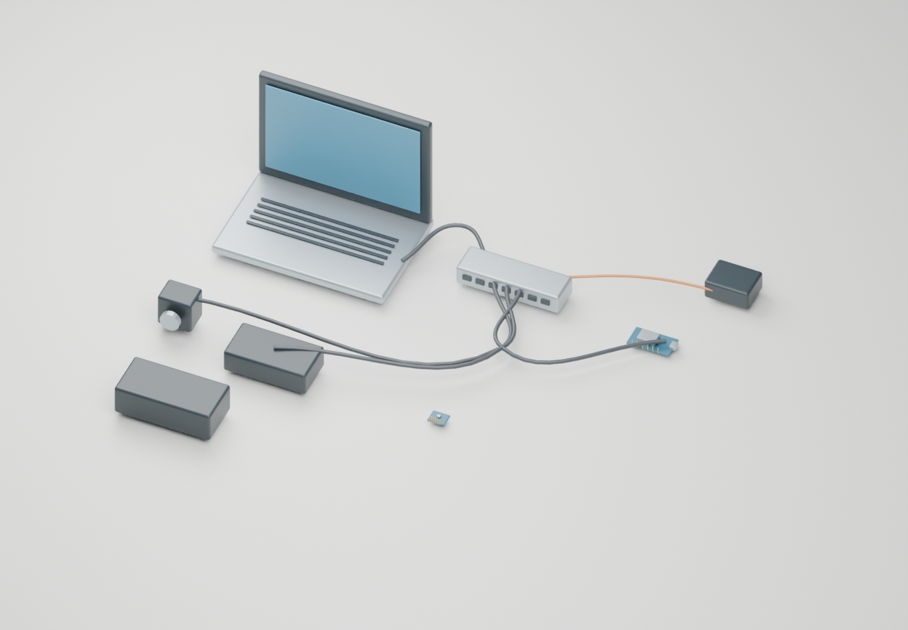
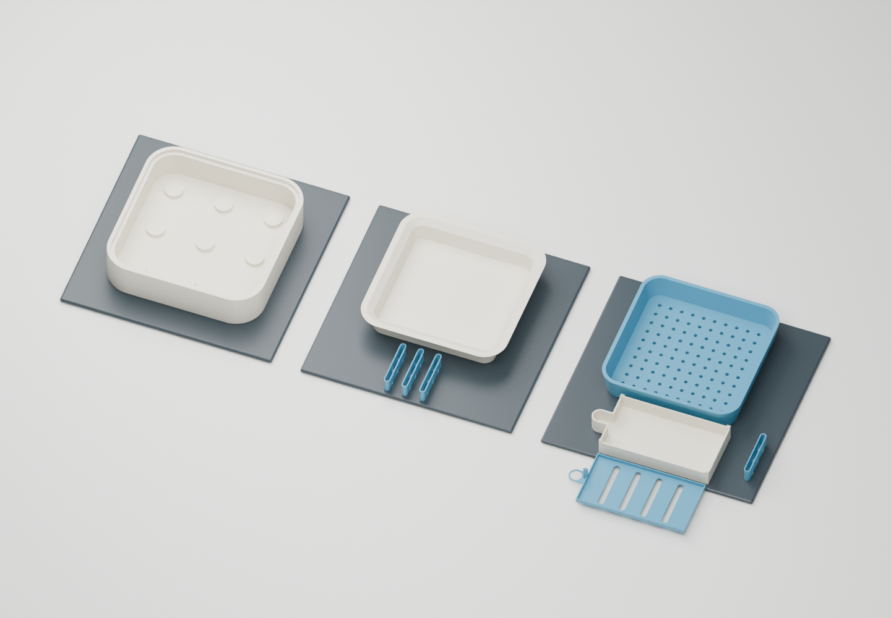
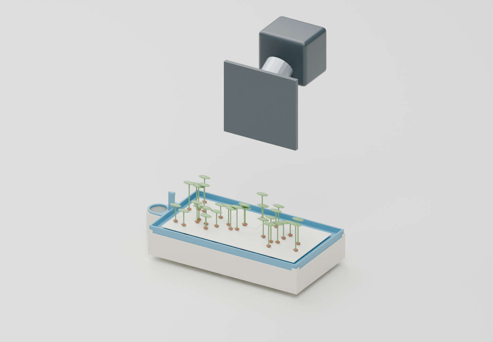
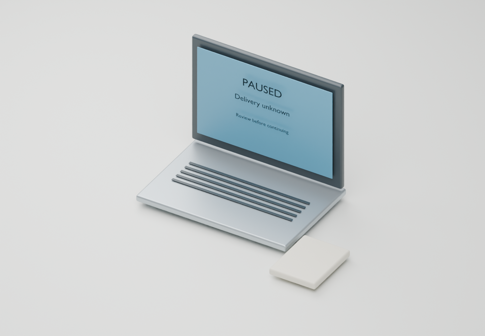

FIELD GUIDE / SOFTWARE ROADMAP
Software roadmap
A visual walkthrough of what each software milestone builds, which hardware it connects to and how we will verify it.
Proposed software · Blender illustrations · Human-supervised watering
Roadmap · Sep 22–Oct 10 · 01 / 16
The software we are building

One supervised care cycle: inspect a tray, measure light, get a human watering decision, pour and record the outcome.
- Build
- Build software on the Mac before travel; connect the real robot from September 30.
- Hardware
- Two arms, existing cameras, a bottle and paper-growing trays. One optional light paddle.
- Ready when
- A cycle can explain what happened, pause when uncertain and recover without repeating a pour.
Implementation notes and limits
These are proposed deliverables, not completed robot software. The NY print/growing trial is physical work already in scope; September 30 remains the start of robot commissioning. The Blender hardware and interfaces are illustrations. Actual planter meshes are used, but robot/table shapes do not validate reach or load capacity.
Scope · first supervised build · 02 / 16
The hardware defines the software

The Mac coordinates the work. Each device gets a small adapter that reports its identity, status and errors.
- Build
- Create a named configuration for motor ports, camera views, tray positions and enabled sensors.
- Hardware
- Hub carries USB data. Motor supplies are separate. ESP32 connects the optional light sensor.
- Ready when
- Disabled devices are recorded as not applicable; an absent probe never becomes a “dry” reading.
Implementation notes and limits
The paper-tray profile defers moisture probe, relay, pump, scale and pod-moving operations. The first build uses head/wrist cameras, not a fixed overhead camera. Human checks of water reserve and paper wetness remain required. The assembly guide identifies the recorded two-wheel kit; do not use a three-wheel motor map. Connection checklist.
Sep 22–24 · build and interrupt · 03 / 16
A simulator before the robot arrives

Practice the entire sequence with virtual devices, including failures between steps.
- Build
- Build explicit states, transition deadlines and fake camera, arm and light responses.
- Hardware
- Virtual versions stand in for the tray, cameras, gripper, bottle and ESP32. They move no hardware.
- Ready when
- Interrupt every state. Restart into a known state or a review request, never a blind watering retry.
Implementation notes and limits
Sequence: identify, inspect, measure, request human refill authorization, supervised care, verify, park. Each transition lists its required evidence and timeout. Pick/dock/weigh/return states from the redline apply only to a future pod-handling profile; mark them not applicable here. Keep simulated and physical episodes distinguishable in every saved record. Dates are targets; a failed test holds the previous operating level.
Sep 22–24 · save before acting · 04 / 16
A durable record of every action
“We sent the pour command” and “water reached the tray” are different facts.
- Build
- Save intended, attempted and verified stages with cycle IDs, command IDs and original evidence.
- Hardware
- Camera images, light readings, motor feedback and human water checks meet in the Mac’s local journal.
- Ready when
- After a crash, a possibly completed pour remains UNKNOWN until someone reconciles the outcome.
Implementation notes and limits
Use SQLite plus image files as the proposed local store. Save intent before dispatch and an attempted record before a possible physical effect. Duplicate IDs return existing records; IDs cannot guarantee exactly-once physical watering. Include tray/recipe, timestamps, units, validity, calibration IDs, software/model versions, interventions and outcome evidence. Distinguish estimated, measured, human-attested, unknown and not-attempted delivery. A visible wetness change is not a measured volume.
Sep 25–26 · validate the sensor adapter · 05 / 16
Readable light measurements

A light number needs a time, a known pose and a validity flag before it is useful.
- Build
- Build ESP32 serial parsing, freshness checks and a record of light level, spread and errors.
- Hardware
- One BH1750 sends readings through the ESP32 and USB hub to the Mac.
- Ready when
- A disconnected cable, old sample or sensor error produces INVALID—not a fabricated value.
Implementation notes and limits
First test with short bench wires. Firmware pin choices must match the delivered ESP32 and BH1750. At the actual configured conversion timing, collect distinct fresh readings after motion settles; roughly ten over two seconds is a starting procedure, not an accuracy guarantee. Log pose, height, median/spread, saturation and bus errors. Lux is not PPFD. Optional air sensing stays on the robot body. Light circuit assembly.
Sep 25–26 · identify and inspect · 06 / 16
A camera record for the correct tray

The software must know which tray it sees and whether that view is fresh and usable.
- Build
- Build tray identity checks, image timestamps and a visible record of crop and refill area.
- Hardware
- Use the robot’s existing head and wrist cameras while the base stays parked.
- Ready when
- A wrong tray, covered refill opening or stale image blocks the relevant care action.
Implementation notes and limits
Store original images rather than only a model summary. A camera index can change after reconnecting: map views to names and verify them. A planned camera view is not proof that a waterline is visible. For this paper-tray profile, a person checks both the water reserve and a seed-free paper edge and authorizes each refill. Removing the soil probe does not validate camera-only wetness estimation.
Sep 25–26 · make failures reproducible · 07 / 16
Fault tests for unclear views

A blocked camera means “unknown,” even if a classifier says the scene looks normal.
- Build
- Build replay cases for stale images, occlusion, glare, wrong identity, cable loss and interrupted actions.
- Hardware
- Head/wrist camera coverage includes the refill target and the area where a spill could appear.
- Ready when
- Spill status has three outcomes: CLEAR, SPILL or UNKNOWN. An unseen area cannot pass as clear.
Implementation notes and limits
Dedicated leak pads are deferred. Camera spill detection is experimental: evaluate tiny clear-water spills, shadows, glare and arm occlusion, plus false clearances and recovery latency. Include uncertain grip, dropped acknowledgements and cloud loss. Probe-contact/scale faults are conditional tests only if those optional profiles are enabled. Relevant local stop behavior must survive cloud loss.
Sep 22–26 · review without a terminal · 08 / 16
An exception viewer for a person

When the robot pauses, show the evidence and the reason—not just an error code.
- Build
- Build a viewer with the latest image, its age, current action, last verified state and eligible next steps.
- Hardware
- It runs on the Mac using camera and action records; remote access is a later secured integration.
- Ready when
- For unknown delivery, “retry watering” is unavailable. A person can request inspection and reconcile.
Implementation notes and limits
Example: the Mac loses the motor acknowledgement during a pour. Persist UNKNOWN delivery. The viewer offers reinspection or caretaker service, not a second dose. Record reviewer identity, time, physical findings and resolution. A confirmation button must correspond to an actual inspection. A remote viewer is not itself a safety mechanism or permission to expose robot controls publicly.
Sep 25–26 · shadow mode first · 09 / 16
Jev and Astra review the evidence
Jev classifies incidents. Astra investigates them and proposes experiments or changes.
- Build
- Build a shadow adapter and compare their suggestions with rules using the same saved episodes.
- Hardware
- They consume camera, sensor and action records. The local controller retains physical permission checks.
- Ready when
- Neither model can override stale evidence, uncertain grip or a missing human refill authorization.
Implementation notes and limits
Jev categories: normal, needs reinspection, handling fault, watering discrepancy, crop concern and unknown. Allow abstention. The feedback’s 0.85 heuristic is not a validated threshold; the described helper source has not been audited here. Track missed faults, false clearances, unnecessary alerts, review time, latency and cost. The suggested 120 labeled episodes and ten per priority fault class are initial collection targets, not proof of reliability. Astra proposes versioned changes; automatic code modification/retraining remains deferred.
Sep 27–29 · freeze and restore · 10 / 16
A rehearsal before travel

Arrive with a rehearsed software package and a recorded growing recipe.
- Build
- Freeze configuration, export an incident bundle, restore a backup and rehearse offline recovery.
- Hardware
- Carry the software and clean dry parts; preserve NY growing observations separately.
- Ready when
- A fresh environment can recover the saved records and resolve a defined simulated exception.
Implementation notes and limits
Version code, model, recipe and calibration files. Store original evidence with its identifiers and keep a working rollback. Arrange local care or end the NY growing trial before departure. Seeds and live growth remain subject to the separate travel plan. The packing render does not establish airline clearance. Travel plan · Trial notebook.
Sep 30–Oct 2 · days 1–3 · 11 / 16
Connect the real hardware

Replace simulated device responses with measured behavior from the assembled robot.
- Build
- Connect motor/camera/ESP32 adapters, save arm calibration and commission light-reading poses.
- Hardware
- Fit the light paddle, dry electronics enclosure and moving cable; verify the two-wheel robot configuration.
- Ready when
- Readings remain valid throughout the cable sweep, and empty-arm stops and camera views work together.
Implementation notes and limits
Use supplied wall power first after label checks. Verify bottle/tool fits and real reach; a Blender view is not a fit test. Keep base driving disabled during the first farm routine. The light face points upward at canopy height, outside arm/cable shadow. Repeatability alone is not absolute calibration. Existing motor leads do not replace the additional sensor harness. Robot commissioning steps.
Sep 30–Oct 2 · days 1–3 · 12 / 16
A small supervised bottle pour

Turn a tested pickup, approach and upright return into one bounded care operation.
- Build
- Build supervised motion steps with grip/target checks, action records and state-specific recovery.
- Hardware
- Gripper holds a small bottle; the tray stays still. Its built-in water supply is refilled by pouring.
- Ready when
- Test delivery into a kitchen measure across fill levels. A tilt duration is never labeled measured volume.
Implementation notes and limits
The selected wide-mouth bottle needs a tested outlet or a suitable household replacement. First rehearse empty. Then test small fills over household containment with a person present. Require known fill, correct tray, fresh view, clear reachable target and human-confirmed need before a pour. While control exists, use the commissioned upright-return action; do not blindly release or de-energize a tilted bottle. Total power loss may leave it draining. No pump or relay actuates watering.
Oct 3–5 · days 4–6 · 13 / 16
A complete parked care cycle

Join inspection, optional light measurement, human review, watering and verification into one routine.
- Build
- Build the cycle runner across every intended tray position, with deadlines and persistent recovery.
- Hardware
- One tool at a time in the gripper. Trays stay located; bottle and paddle return to known rests.
- Ready when
- Every outcome and intervention is saved. Unknown delivery pauses the cycle without repeating water.
Implementation notes and limits
Human checks water reserve and paper wetness: a full trough can coexist with dry paper if its wick disconnects. Light measurement does not decide thirst. Capture task demonstrations only once teleoperation and the full supervised sequence are reliable. If a future workflow moves pods, reintroduce pick/dock/return states and independent grip/location evidence. A motion-complete message alone cannot close an uncertain physical action.
Oct 3–8 · collect, label and compare · 14 / 16
Evaluate against real observations

Use repeatable crop observations and independently labeled incidents to judge changes.
- Build
- Build dataset exports, held-out comparisons and a regression set of actual failures and recoveries.
- Hardware
- Use the same crop lot and record tray, light, water checks and interventions; kit geometry still differs.
- Ready when
- A candidate change improves the chosen measures on held-out episodes before a bounded supervised trial.
Implementation notes and limits
Growth illustrations are not predictions. Keep simulated episodes separate from real ones and do not tune on the evaluation set. Re-run relevant physical tests after changes to motion, wiring or watering. No ready-to-run autonomous plant-watering checkpoint was established; the upstream bottle demo is teleoperated. Training a task policy requires our own reliable demonstrations and real-world evaluation. Keep recipes fixed within comparisons or record necessary deviations.
Oct 6–8 · days 7–9 · 15 / 16
Longer observation windows

Extend monitoring only after the relevant fault tests pass.
- Build
- Freeze features, evaluate alerts and rehearse 2-hour, then 8-hour, then 24-hour observation windows.
- Hardware
- The parked robot observes the crop and takes validated readings; a person remains assigned to watering.
- Ready when
- Each window produces reviewable records and alerts. Longer monitoring does not grant autonomous pouring.
Implementation notes and limits
A failed gate keeps the previous operating level. Expand water-control authority only under a separately validated delivery and recovery profile. Navigation, automatic refill, printer pickup and construction tasks remain deferred. Human response availability is part of the observation plan; passing an offline replay does not demonstrate unattended hardware reliability.
Oct 9–10 · days 10–11 · 16 / 16
A caretaker can take over

Finish with an understandable system and a repeatable way to inspect and refill the trays.
- Build
- Repeat weak cases, restore backups, export the dataset and write the caretaker’s recovery instructions.
- Hardware
- The caretaker can identify each tray, inspect paper/water, refill manually and park the tools.
- Ready when
- Another person resolves representative exceptions and restores the saved configuration successfully.
Implementation notes and limits
Deliver code/configuration versions, calibration records, camera/tray identities, incident bundles and operating limits. Keep hardware assembly and the combined growing guide linked below. Plans are not measured performance: record which gates actually passed and unresolved cases. The modular table is still subject to actual geometry, stiffness and reach checks; a household surface is sufficient for growing tests. Assembly guide · Growing and kit instructions.
Use Left / Right arrow keys. Read all shows the full roadmap and loads its illustrations for browser Print. Printing includes every slide and its notes.
Sources and editable Blender files
Based on the supplied redline PowerPoint and September 20 software-roadmap feedback, updated for the paper-tray, bottle-watering and September 30 commissioning decisions. This presentation documents proposed work; it does not implement robot controls.
Six additional roadmap Blender scenes · Original 17-scene visual atlas · Model credits
Upstream XLeRobot software · Teleoperated bottle demo · Task-training workflow · Light-sensor timing reference